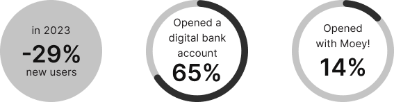
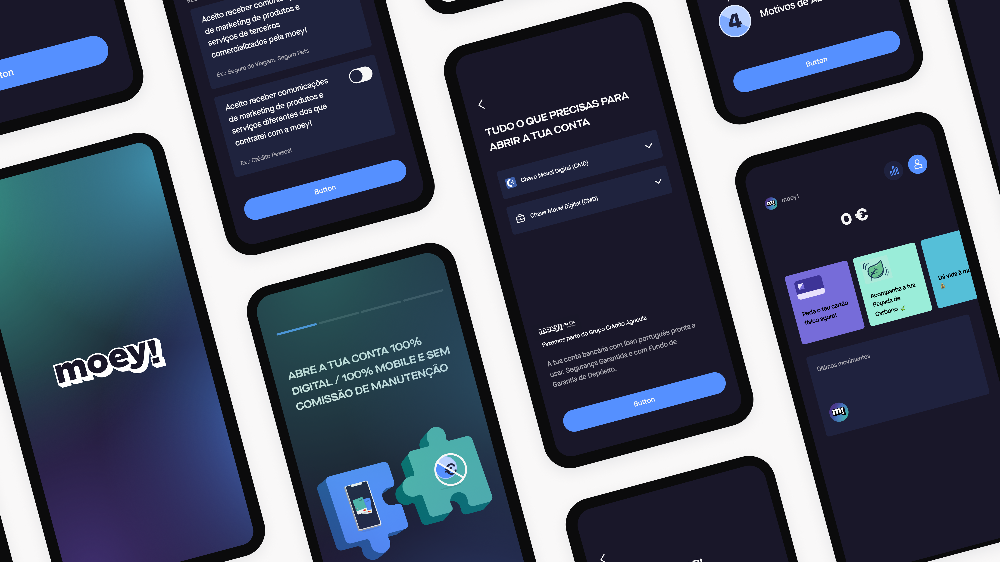

01 / ONBOARDING
A reorganized journey with fewer screens and clearer information.
A simpler way to start banking.
Moey! is a Portuguese mobile-only digital bank. This project explores how a clearer onboarding journey and a more connected acquisition strategy could help people start banking with confidence.
From simplifying the first steps to building a community around financial goals, the aim was to make the experience feel more accessible, intuitive and relevant to everyday life.
Opening a bank account should feel straightforward. But for many people, the process involves multiple steps, unfamiliar requirements and waiting for documents to be verified.
Moey! project focuses on improving the end-to-end onboarding experience while developing a digital marketing strategy to attract new customers.
Make account opening easier to understand and complete.
Guide people through verification with clear information and support.
Bring acquisition, financial education and community into one coherent experience.
The existing onboarding journey required users to move through several steps, including Mobile Digital Key authentication and document submission. The process could feel confusing, especially when users were unsure which documents were needed or why a submission had been rejected.
This complexity contributed to abandonment before users completed account opening.
At the same time, Moey! needed a stronger acquisition strategy to attract new customers and communicate the value of digital banking.

How might we make opening a digital bank account feel simpler and more reassuring, while helping more people discover and choose Moey!?
Research with 35 participants explored how people use banking apps, manage their money and experience the account-opening process.
The research highlighted a shared desire for better financial management, without unnecessary maintenance or transfer fees.
The project’s onboarding persona, Pedro, is a 25-year-old journalist looking to build a solid financial foundation through a simple, low-cost digital account.
Wants a bank account that supports better control over everyday spending.
Needs a straightforward digital process without unnecessary steps or costs.
Needs to understand what documents are required, how to submit them and what happens next.
The onboarding journey begins with enthusiasm. But as users move through authentication and document verification, uncertainty can turn into frustration.
The redesign focuses on making each step easier to understand, with clearer information and more guidance throughout the process.
Users without a Mobile Digital Key can explore the app, with most features locked until they open an account. Notifications guide them through the remaining steps to become a Moey! customer.
The redesign focuses on reducing unnecessary complexity and making information easier to find.
Rather than asking users to navigate multiple screens with overlapping information, the experience brings related steps together and makes the next action clear.
Users have to work out what to do next, often without enough guidance.
Keep the information clear, the actions obvious and the user supported throughout account opening.
The early UX/UI exploration focused on reorganising the onboarding screens and merging related pages to improve the flow of information.
The design work explored how to:
The proposed experience combines a clearer onboarding flow with AI-assisted document verification.

Improving onboarding was one part of the project. The acquisition strategy explored how Moey! could connect with people before they even downloaded the app.
The campaign concept, Vamos Juntos, focused on shared financial goals, community and the idea that people can make progress together.
Interactive TOMI displays, digital banners and influencer marketing introduce Moey! to new audiences.
The Moey! Quest microsite invites people to take part in creative challenges, referral activities and savings goals.
Goal-based communities help users interact with people who share similar aspirations.
Financial education content supports people in making more informed financial decisions.
Email marketing reconnects with users who abandon onboarding at critical steps, such as Mobile Digital Key setup or document upload.
A campaign that makes financial progress feel more achievable through shared goals and community participation.
The campaign explores three themes:
Challenges that encourage participation and creative expression.
A referral programme that rewards people for bringing others into the Moey! community.
A savings challenge that encourages customers to work towards a goal over time.
The strategy positions Moey! as a companion in people's financial lives — not just a place to manage money, but a way to learn, connect and work towards a more secure future.
The project brings together UX/UI improvements and a digital acquisition strategy to address two connected challenges: helping people complete account opening and giving them a reason to choose Moey!.
The proposed onboarding experience reduces complexity through clearer information, a more intuitive structure and AI-assisted document verification.
The acquisition strategy extends that experience beyond the app, using community, financial education and shared goals to build a stronger relationship with potential customers.
A digital banking experience designed to make starting easier, staying engaged more meaningful and financial progress feel more achievable.